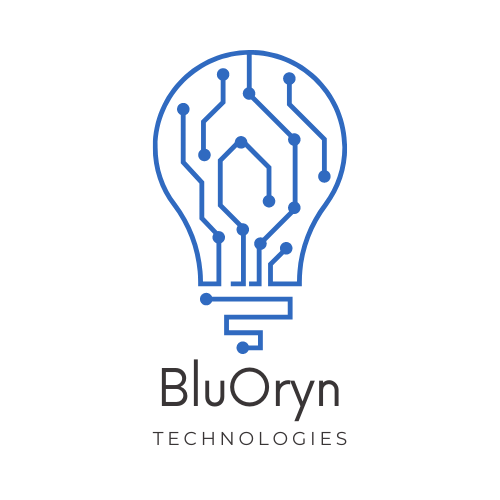

Hi, We are BluOryn Technologies. We help you create a career.
Workshops, University admissions, Financial Aid and Scholarships
BluOryn Website
Follow our updates on LinkedIn
Follow us On Instagram
Connect on WhatsApp
Partner with us
Made with ❤️ By DelhiTechies